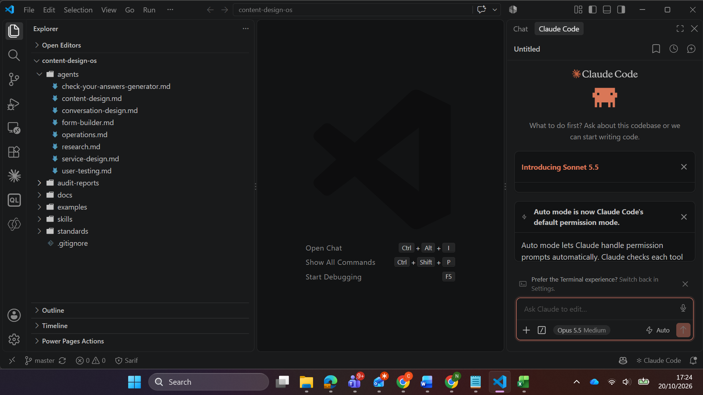
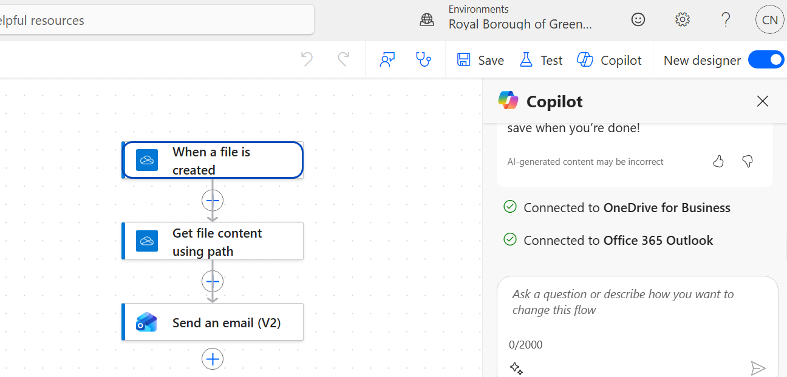

The situation
The team builds and maintains transactional forms for council services — housing, benefits, SEND, waste — used by residents who are often stressed or time-pressured. Alongside the forms runs a constant flow of content operations: change tickets, audits, migrations from an old CMS to Local Gov Drupal, and intranet updates on SharePoint. Much of that work is repeatable and mechanical: enforcing a house style across hundreds of pages, checking content for broken links and outdated information, rewriting tickets to standard, and rebuilding the same form patterns again and again. The expertise to do it well is real, but it lives in people's heads and in scattered documents — so it doesn't scale, and it walks out of the door when people do.
The problem
Completing this work well depends on knowledge and discipline spread across several places:
- applying a detailed style guide (plain English, reading age 9, strict rules on naming, dates, links and inclusive language) consistently on every ticket and page
- auditing pages for broken links, outdated dates and duplication — a page-by-page human task
- repeating the same form scaffolding — wizard pages, conditional logic, "check your answers" summaries
- retaining the reasoning behind good decisions — why a question is framed a certain way, which behavioural principle a layout serves
So the difficult part was making the expertise explicit, applying it consistently, doing the mechanical work automatically, and keeping the whole thing maintainable and governable — a system that could be handed to anyone on the team, or eventually productised for other teams.
Goal 1
Consistency by design. Every agent applies the same standards, with no drift as the system grows.
Goal 2
Automate the mechanical work. Real code for link-checking, date-scanning and duplication — not a prompt pretending to.
Goal 3
Keep a human in the loop. Judgement and public communication always pass through a person before anything is sent.
Decisions
1. Thin agents, shared standards
The central architectural decision. Instead of each agent carrying its own copy of the style guide and procedures, the standards live once, in a shared folder, and every agent reads them. A change to the house style is made in one file, and all eight agents inherit it instantly — no drift, no eight-way maintenance. It also keeps the system honest: an agent never invents a rule; if it can't find one in the standards, it says so.

agents/ reading from standards/ and docs/, with the skills/ audit engine and a local examples/ library — one version-controlled home.2. A behavioural-science layer
Most content tooling stops at "is it plain English?" I wanted the OS to ask a harder question: does this work with how people actually think? The shared standards include a behavioural-principles file — cognitive load, framing and defaults, friction (where to remove it and where to add it deliberately), the Behavioural Insights Team's EAST framework, trust and reassurance for high-stakes services, error psychology, and attention and salience. Every agent applies it: operations to pages, service design to diagnose why a journey fails, conversation design to dialogue. This is the distinctive layer — it turns the system from a style-checker into a design partner.
3. Agents are the brain; scripts are the hands
A judgement call about what an AI agent does well and what needs real code. Reasoning and writing — rewriting to style, reviewing a page, drafting a summary, designing a flow — an agent does well. Mechanical work at scale — fetching 20 pages, following every link, comparing text for duplication, producing an Excel report — needs a script, not a prompt. So the content-audit tool is a tested Python engine the agent invokes, reads the output of, and turns into human-readable communication. Each does what it is good at.
4. A hard safety gate on the audit engine
The script refuses any URL that isn't a public royalgreenwich.gov.uk page — other domains and login-walled paths are rejected, so it can't wander off-site or hit authenticated data. I tested this against spoofed hostnames (such as evil-royalgreenwich.gov.uk.attacker.com) and admin paths; all were correctly rejected. The script catches the mechanical problems reliably — broken links, outdated dates, duplication, missing alt text, generic link text — and flags the judgement calls for a human. It never pretends to decide whether alt text is good.
5. A human gate, enforced by the architecture
Reports land in a local staging folder the person reviews. Nothing reaches a notification channel until they deliberately move an approved report into a watched folder. It would have been technically possible to have the AI post straight to Teams — I chose not to, because that would collapse the human gate I'd deliberately designed. Power Automate was the right fit precisely because it's dumber: it reacts to a file the human moves, sending through the council's own authenticated channels. The automation triggers on the person's decision, not the AI's judgement.

The content-audit pipeline
The most involved piece. It takes a page or a list, runs mechanical checks, and produces a reviewable report — with a deliberate human gate before anything is sent. The two points in the accent colour are the governance controls: the safety gate that keeps the script on public council pages, and the human gate that no report passes without a person.
How the agents work together
The OS isn't eight isolated prompts — it's a team with a flow of work between them. Research feeds service design, which maps journeys and commissions work; operations rewrites content and the form-builder builds the form; the check-your-answers generator produces the summary page; user testing validates the change and feeds back to service design; conversation design handles the assistant; content design handles drafting and critique. Each follows the same thin-agent pattern, reading the same shared standards.
Iteration
Rebuilding from the authoritative source. My first draft of the style-guide standard was reconstructed from an existing agent prompt. When I got hold of the official April 2024 style guide, I rebuilt the standard from it — the full A–Z, the plain-English checklist, the alternatives table — so the system rests on the real source, not a paraphrase. Redacting to roles, not names. The procedure docs originally named specific colleagues; heading toward a shareable, eventually council-owned repo, I redacted every name to a role, so the guidance stays actionable and can't go stale or expose individuals. A data-protection line on example forms. A sanitisation scan before committing found that some live form exports contained third parties' personal email addresses, used for routing. Even in a private repo, that's third-party personal data leaving council-controlled systems, so I excluded all 27 example forms from version control entirely — they stay local and usable by the agents, but never touch GitHub.
Results
Designed, built, tested and version-controlled in a focused build, from an empty folder to a backed-up, documented system.
Specialised agents sharing one set of standards — operations, service design, research, user testing, conversation design, form builder, content design, and a check-your-answers generator.
Mechanical check types in a tested audit engine — broken links, outdated dates, duplicate content and mechanical accessibility — behind a public-only safety gate.
Real forms analysed as reference patterns for the form-building agents, kept local and out of version control for data protection.
Beyond the numbers: house style and behavioural principles are applied the same way every time because every agent reads the same standards; manual, page-by-page checks are now a single command producing a reviewable report; the team's tacit craft is written down, version-controlled and inheritable; and governance is respected throughout — public-only auditing, a human gate on every send, redacted procedures, and real data kept out of version control.
Impact measures (in progress)
The system is now being used on a live form-migration programme. Efficiency and quality measures are being captured from real use and will be reported here, including content-audit completion time (automated versus manual), pages and forms processed through the audit and operations agents, the reduction in style-guide corrections at review, and onboarding time for a new team member to produce work to standard.
What I learned
- Architecture beats features. The single most valuable decision was "thin agents, shared standards." It's what makes the system maintainable and honest; everything else is downstream of that.
- Know what AI shouldn't do. The system is stronger because it keeps a human in the loop on judgement and public communication, and uses plain code for mechanical work. Resisting the temptation to automate the final send was a design strength, not a limitation.
- Sanitise before you commit. The third-party-email finding was a reminder that data protection is a build-time discipline, not an afterthought.
What I would do next
Turn the OS into a templated solution pack for other content and UX teams. The architecture is deliberately generic; only the content is Greenwich-specific. The next phase separates the reusable framework — thin agents reading shared standards, the behavioural-principles layer, the quick-check-versus-audit routing, the audit engine, the human-gated notification pattern — from the customer's own layer (their style guide, their CMS procedures, their domain), ships with fully fictional worked examples, and makes the audit engine config-driven so the target domain isn't hardcoded.
Internal documents and live form exports are withheld for confidentiality and data protection. Impact metrics are being captured from live use and are not yet reported; treat the current results as a description of the system built rather than a production benchmark.